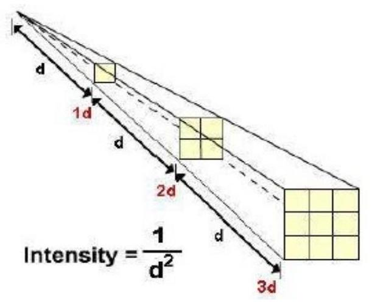

Illumination Basics & Terminology
ILLUMINATION
When light falls on a surface, it becomes visible, the phenomenon is called illumination.
Illumination is defined as the luminous flux falling on a surface per unit area. It is denoted by E and measured in lumen per square meter or metercandle.
ILLUMINATION HISTORY
- Luminous efficacies were increased enormously through the centuries from $0.01 \mathrm{~lm} / \mathrm{W}$ candle to above $100 \mathrm{~lm} / \mathrm{W}$ for modern "white" light sources.
- Torch was probably the first lighting source and fixture as well around 400000 years BC.
- Simple lamps made of shell and fat around 13000 BC .
- Pottery lamps (with refined design) around 600 BC .
- Candle appeared around 400 AD and was the first light source that could be used either in interior or exterior with or without a transparent protective case.
- Around 1800 the carbon arc lamps were introduced
- Gas lamps in 1814.
- Incandescent lamp has appeared during 1879 by Thomas Edison with luminous efficacy $\sim 1.4 \mathrm{~lm} / \mathrm{W}$.
- High Intensity Discharge lamps introduced in 1901.
- Low pressure sodium in 1932,
- Fluorescent in 1932.
- Quartz and metal halide in 1960.
- Then Sulfur lamp- exciting sulfur and quartz with microwaves.
- In recent years LED use have become widespread. There are two possible approaches to produce white light. The first is to use a blue LED coated with a white phosphor (1996). The second method of producing white light is to use additive mixing of the three primary colours red, green and blue.
Terminologies used in illumination
Light
Electromagnetic radiation that the unaided human eye can perceive, having a wavelength in the visible range from about 370 to 800 nanometres (nm) and propagating at the speed of $3 \times 10^{8} \mathrm{~m} / \mathrm{s}$.
Light is emitted from a body due to any of the following phenomenon:
- Incandescence: Solids and liquids emit visible radiation when they are heated to temperatures about 1000 K . The intensity increases and the appearance become whiter as the temperature increases.
- Electric Discharge: When an electric current is passed through a gas the atoms and molecules emit radiation whose spectrum is characteristic of the elements present.
- Electro luminescence: Light is generated when electric current is passed through certain solids such as semiconductor or phosphor materials.
- Photoluminescence: Radiation at one wavelength is absorbed, usually by a solid, and re-emitted at a different wavelength. When the re-emitted radiation is visible the phenomenon may be termed either fluorescence or phosphorescence.
Properties of Light
- Rectilinear propagation: Light travels in straight lines.
- Reflection: Light striking a smooth surface bounces/turns back into the original medium.
- Refraction: Light bends when entering a transparent medium.
Human eyes are not equally sensitive to all colors. Eyes are most sensi- tive in the mid-range near $\lambda=555 \mathrm{~nm}$. For example, Yellow light appears brighter to the eye than does red light.
Photometry and Radiometry
Radiometry is the study of optical radiation,-light, ultraviolet radiation and infrared. Photometry, on the other hand is concerned with humans' visual response to light.
Radiometry is concerned with the total energy content of the radiation, while photometry examines only the radiation that humans can see.
Plane angle
The angle subtended at a point by two converging lines lying in the same plane is called plane angle. It is measured in radians and equal to the ratio of the length of the arc too its radius,
Solid angle
The angle subtended by the partial surface area of a sphere at its centre is called as solid angle. A solid angle is the three-dimensional equivalent to a two-dimensional angle. It is measured in steradians (sr).
One steradian (sr) is defined as "the solid angle subtended at the centre of a sphere by an area on its surface numerically equal to the square of the radius."
From the definition, Steradian $\Omega=\frac{A}{r^{2}}$
Example:
Example: What solid angle is subtended at the center of a sphere by an area of 1.6 m m 2 ? The radius of the sphere is 5 m m .
Luminous flux
Luminous flux' (F) is the rate of flow of light energy from a light source. Luminous flux is measured in Lumen (lm).
Luminous Intensity
Luminous intensity' (I) is the rate of flow of light energy per solid angle. The unit is $\mathrm{lm} /$ solid- angle or 1 candela (cd). (A solid angle is measured in steradians (sr) and there are $4 \pi$ sr in a sphere).
Simply put, Luminous intensity in any particular direction is the luminous flux emitted by the source per unit solid angle in that direction. It is denoted by I and its unit is Candela or candle power (CP).
Candle Power
- The light radiating capacity of a source is called its candle power.
- The number of lumens given out by a source per unit solid angle in a given direction is called its candle power. It is denoted by C.P.
Total flux emitted = CP X solid angle
$ =1 \mathrm{X} 4 \pi=4 \pi$ lumens $ =4 \pi$ lumens. Lux
One meter candle or lux is defined as the illumination produced by a uniform source of one CP on the inner surface of a sphere of radius one meter.
Glare
In the human eye, the opening of pupil is controlled by its iris which depends upon the intensity of light received by the eye. If the eye is exposed to a very bright source of light, the pupil of the eye contracts automatically in order to reduce the amount of light admitted and prevent damage to the retina. This effect is called glare.
Glare is defined as the brightness within the field of vision of such a character so as to cause discomfort and interference in vision.
Lamp efficiency
It is defined as the visible radiations emitted by a lamp in lumens per watt.
Usually, the light sources do not radiate energy only in the visible spectrum. The radiant energy is also accompanied with infrared and ultra violet radiations.
Sun light produces majority of radiations in the visible spectrum. The tungsten lamp produces small radiations so its efficiency is very poor.
The efficiency of fluorescent lamp is more than that of a tungsten lamp.
Reduction Factor
Reduction factor of a source of light is the ratio of its mean spherical candle power to its mean horizontal candle power.
Reduction factor = MSCP / MHCP
Mean Horizontal Candle-Power
The average value of the candle-power of a light source in all directions in a horizontal plane through the source,
Mean Spherical Candle-Power
Mean Spherical Candle Power, a unit of measure that represents the average output of a light source measured in all directions ($360^{\circ}$)
Reflection Factor
Whole of the light incident on a reflecting surface is not reflected. Some portion of it is absorbed by the surface.
The ratio of the reflected light to the incident light is called reflection factor.
Spectral Response
2. Even within the narrow spectrum of visible light, the human eye is more sensitive to some wavelengths than to others.
- This sensitivity depends on whether the eye is adapted for bright light or darkness because the human eye contains two types of photoreceptors - cones and rods.
- When the eye is adapted for bright light, called photopic vision (luminance levels generally greater than about $3.0 \mathrm{~cd} / \mathrm{m}^{2}$), the cones dominate.
- At luminance levels below approximately $0.001 \mathrm{~cd} / \mathrm{m}^{2}$, the rods dominate in what is called scotopic vision.
Luminous Efficiency Functions
- Between these two luminance levels, mesopic vision uses both rods and cones.
- The figure below shows the relative sensitivity to various wavelengths for cones (photopic) and rods (scotopic).
- Conventionally, the peak of the photopic luminous efficiency function (the wavelength 555 nm ) is selected as the reference wavelength for the lumen, the standard photometric unit of light measurement.
- By definition, there are $683 \mathrm{~lm} / \mathrm{W}$ at 555 nm and the lumens at all other wavelengths are scaled according to either the photopic or the scotopic luminous efficiency functions.
- For example, at 507 nm there are $1700 \mathrm{~lm} / \mathrm{W}$ when the scotopic luminous efficiency function is used, but only $304 \mathrm{~lm} / \mathrm{W}$ when the photopic luminous efficiency function is used.
- Nearly every light measurement uses the photopic luminous efficiency function.
Spectral Luminous Efficacy
- -Spectral luminous efficacy, $\mathrm{K} \lambda$, is the ratio of luminous flux to radiant flux.
- - In other words, spectral luminous efficacy describes the absolute eye response of the normalized efficiency function.
- -The CIE defines K $\lambda$ for photopic vision as 683 lumens/watt at 555 nm .
- -For other wavelengths, $\mathrm{K} \lambda$ for photopic vision can be calculated using the following equation:
Where:
- $-\mathrm{K}_{\mathrm{m}}=683 \mathrm{~lm} / \mathrm{W}$ (the maximum sensitivity for photopic vision, which occurs at 555 nm )
- $-\mathrm{V} \lambda=$ the value of the photopic spectral luminous efficiency function for that wavelength
Radiant Exitance, Irradiance (Radiant Incidence), and Illuminance
- Radiant exitance, denoted by the letter M, is the radiant flux per unit area leaving the surface of a source of radiation.
- - In other words, radiant exitance is the flux density.
- - Irradiance or radiant incidence, denoted by the letter E , is the flux per unit area received by a surface. Irradiance and radiant exitance are both measured in $\mathrm{W} / \mathrm{cm}^{2}$ or $\mathrm{W} / \mathrm{m}^{2}$.
- - Illuminance (Ev) is a measure of photometric flux per unit area, or visible flux density.
- - Illuminance is measured in either lux ($\mathrm{lm} / \mathrm{m}^{2}$) or footcandles ($\mathrm{lm} / \mathrm{ft}^{2}$).
- - One steradian has a projected area of 1 square foot at a distance of 1 foot, and an area of 1 square meter at a distance of 1 meter.
- - Therefore, a 1-candela ($1 \mathrm{~lm} / \mathrm{sr}$) light source produces 1 lumen per square foot at a distance of 1 foot, and 1 lumen per square meter at 1 meter.
- - Note that as the luminous flux projects farther from the source, it becomes less dense.
- - In the example below, the illuminance decreases from $1 \mathrm{~lm} / \mathrm{ft}^{2}$ at a distance of 1 foot to $0.0929 \mathrm{~lm} / \mathrm{ft}^{2}$ ($1 \mathrm{~lm} / \mathrm{m}^{2}$) at a distance of 3.28 feet (1 m).
LAWS OF ILLUMINATION
The illumination on a surface depends upon the luminous intensity, distance between the source and surface and the direction of rays of light. It is governed by following laws:
- Inverse square law
- Lambert's cosine law
INVERSE SQUARE LAW
The Inverse Square Law states that the illumination of a surface is inversely proportional to the square of the distance of the surface from the point source.
The Inverse square law states that the Intensity of Illumination produced by a point source varies inversely as the square of the distance from the source.
18 | P a g e
-Where, I is intensity and -d is Distance
As light radiates from a point source, the intensity of Light (I) is inversely proportional to the square of the distance (d) from the source, provided that the distance between the surface and the source is sufficiently large so that the source can be regarded as a point source.
Example:
Example: A point light source has an intensity of 1000 cd and its light falls perpendicularly on a surface. Calculate the illuminance on a surface
LAMBERT'S COSINE LAW
This law states that the illumination on any surface is proportional to the cosine of angle between the direction of the incident flux and perpendicular to the surface, and inversely proportional to the distance $d$ from the source.
Total flux for Isotropic Source
- An isotropic source emits in all directions; i.e., over a solid angle of $4 \pi$ steradians.
- Thus, for such a source, the intensity is: $I=\frac{F}{\Omega}=\frac{F}{4 \pi}$
And Total flux: $F=4 \pi \mathrm{I}$
Electrical methods of producing Light
- By developing arc between two electrodes
- By passing a current through a filament
- By electric discharge through vapors or gases
Examples
Example:
A light source has an intensity of 2000 cd in all direction and is mounted 4 m above the surface. Calculate the illuminance on the
Example:
A 400-cd light is located 2.4 m from a tabletop of area $1.2 \mathrm{~m}^{2}$. What is the illumination and what flux F falls on the table?
Example:
A 30 cd spotlight is located 3 m above a table. The beam is focused on a surface area of 0.4 m m 2 . Find the intensity of the beam.
a... ' n ^ n n - ا